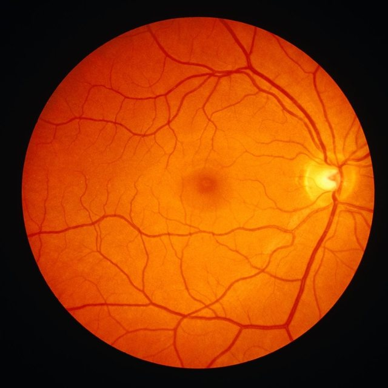

RetinaXplain
See a sample report
Upload a fundus photo and run the screening pipeline to see results here.
Image (L+R)
Assessment
Detection
Generation
Upload a fundus photo, left and right
Screening captures one 45° field per eye. Drop in either or both to see the shape of a report an ophthalmologist would review.
This is a prototype demonstration, not a diagnosis. Reports below are generated in your browser to illustrate what the pipeline's output would look like — it does not run the actual MATLAB segmentation and grading models on your photos. Any real screening should come from a certified ophthalmologist or an approved DR screening programme.
Upload left eye
JPG or PNG, processed in‑browser
Upload right eye
JPG or PNG, processed in‑browser
Left eye
Right eye
Five stages, one referral decision
Every fundus image, however it was captured, passes through the same disciplined sequence before it ever reaches a clinician's screen.
Quality assessment
Focus, illumination and field of view are scored; borderline images get CLAHE, denoising and illumination correction. Ungradeable images are rejected with recapture guidance.
Structure segmentation
Optic disc and fovea localisation, vessel tree extraction, microaneurysm and exudate segmentation, haemorrhage classification, neovascularisation detection.
Severity grading
Lesion evidence is combined into an International Clinical DR score, levels 0–4, tuned for >90% sensitivity and >85% specificity on referable disease.
Explainability
Grad-CAM attention maps and lesion-level evidence are correlated with clinical criteria and paired with a calibrated confidence score.
Clinician review
An annotated report lets an ophthalmologist confirm or override the referral in under 30 seconds — the model assists, the clinician decides.
One report, ready to sign off
Every screening ends the same way: a single annotated report with the grade, the evidence behind it, and a place for the ophthalmologist to confirm or override it — built to be read in under 30 seconds.
Clinician Comment
Sized for a district, not a demo
The pipeline is modelled end-to-end in Simulink — acquisition rate at primary health centres, bandwidth to the reading centre, processing throughput, and how many ophthalmologists a review queue actually needs — so a district covering 100,000+ patients a year knows where it will bottleneck before it deploys.
No comments yet — add a note for the patient record or referring physician.